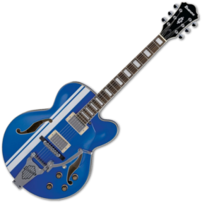

A true, full hollowbody that's ready to race.
The AFS80T electric guitar is from Ibanez's most traditional full-acoustic-electric lines with a large hollowbody that's truly full-hollow. Unlike many so-called "full acoustics" which feature soundblocks in the body, the AFS80T produces the rich, complex tones you can only get from a true, full-hollow guitar body.